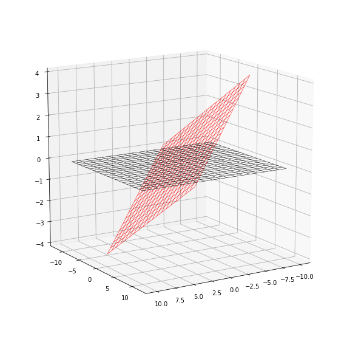

Column Space
Preamble
Both Professor Mike and Gilbert started off with this statement:
The entirety and gist of the matrix space can be summarized as answering two key questions: Given a matrix \(\A \in \F^{m \times n}\) and vector \(\b \in \F^{m}\) and \(\0 \in \F^{m}\), then can we find a vector \(\x \in \F^{n}\) such that \(\(\A\x = \b\)\) \(\(\A\x = \0\)\)
From the matrix-multiplication section, we can easily re-interpret the question as:
\(\A\x=\b\) is equivalent to asking can we find linear combination of columns of \(\A\) such that the sum is \(\b\)? \(\A\x=\0\) is equivalent to asking can we find linear combination of columns of \(\A\) such that the sum is \(\0\) assuming \(\x \neq \0\).
Column Space
Motivation
We often frame our Machine Learning problems into a linear system of equations of the form \(\A\x=\b\). Not every linear system of equation is easily solvable, and has a solution \(\x\) exists if and only if \(\b\) belongs to the column space of \(\A\). Why so? Recall in the section linear algebra and matrix multiplication the following (if you forgot go read up):
A column space of a matrix \(\A\) is just the set of linear combination of the columns of \(\A\), and is a subspace. We will go through it in more details, but for now, I want to introduce this idea first.
As a consequence of the example prior, one should realize three things:
- \(\A\x\) is a combination of the columns of the matrix \(\A\).
- \(\A\x = \b\) may not always have a solution \(\x\).
- If \(\A\x = \b\) has a solution \(\x\), then the product \(\b\) must be a linear combination of the columns of \(\A\). This has important consequences later on. For now, just know that if \(\A\x = \b\) has a solution, then \(\b\) resides in the column space of \(\A\).
Algebraic Definition (Column Space)
Let \(\F\) be a field of scalars and let \(\A\) a \(m \times n\) matrix, with column vectors \(\c_1, \c_2, \cdots, \c_n\). Note that a linear combination of these vectors is any vector of the form
where \(\lambda_i\) are scalars; Then the set of all possible linear combinations of \(\c_1, \c_2, \cdots, \c_n\) is called the column space of \(\A\); In other words, the column space of \(\A\) is the linear span of the vectors \(\c_1, \c_2, \cdots, \c_n\).
And as noted in the right multiplication method in the section matrix-vector multiplication, any linear combination of the column vectors of a matrix \(\A\) can be written as the product of \(\A\) with a column vector where the column vectors hold the coefficients of the linear combination:
Therefore, the column space of \(\A\) consists of all possible products \(\A\x\) for \(\x \in \F^n\). This is the same as the image or range of the corresponding matrix transformation in which we will learn more on in the linear transformation chapter.
Notation (Column Space)
The column space of a matrix is denoted as \(C(\A)\), which is the space spanned by all columns of the matrix \(\A\).
Note that the column space \(C(\A)\) resides in the \(\F^{m}\) space.
Example (Column Space)
If \(A = \begin{bmatrix} 1 & 0 \\ 0 & 1 \\ 2 & 0 \end{bmatrix}\), then the column vectors are \(\a_1 = \begin{bmatrix} 1 \\ 0 \\ 2 \end{bmatrix} \quad \a_2 = \begin{bmatrix} 0 \\ 1 \\ 0\end{bmatrix}\). A linear combination of \(\a_1, \a_2\) is any vector of the form
The set of all such vectors is the column space of \(\A\) and in this case, the column space is precisely the set of vectors \((x, y, z) \in \R^3\) satisfying the equation \(z=2x\) using Cartesian coordinates, this set is a plane through the origin in three-dimensional space.
Theorem (Solvable Solutions)
A system of \(m\) linear equations in \(n\) unknowns \(\A\x = \b\) has a solution if and only if the vector \(\b\) can be expressed as a linear combination of the columns of \(\A\). In other words, the system is solvable if and only if \(\b \in \textbf{Col Space}(\A)\).
Proof can be found in pp.125-126 A modern introduction to linear algebra by Henry Ricardo.
Algebraic Definition (Column Rank)
The column rank of \(\A\) is the dimension of the column space of \(\A\).
In other words, the column rank of \(\A\) corresponds to the largest number vectors that can form a linearly indepedent set in the columns of \(\A\). This interpretation follows because the definition of dimension of a column space means given a vector space \(V\) which is our column space spanned by the columns of \(\A\), the dimension of the column space is the cardinality of the basis \(\B\) of \(V\); and note that any basis \(\B\) of \(V\) (our column space) is a linearly independent set which also spans \(V\). So both definition is equivalent.
Full Column Rank
A matrix \(\A \in \F^{m \times n}\) is full column rank if and only if \(\rank(A) = n\). Thus, if the rank of the matrix \(\A\) is \(r = n\), then the column space spans all of \(\F^{n}\) and is a basis of \(\F^{n}\), else it is a \(r\)-dimensional subspace embedded in \(\F^{n}\).
Lemma (Row Operations preserves Linear Dependency of Column Space)
Row operations apparently change the column space but the important part is that it preserves the column rank of a matrix.
We first start off by proving the lemma to show that the columns of two row equivalent matrices satisfy the same linear dependence relations and subsequently use this to determine a basis for the column space.
If an \(m \times n\) matrix \(\A\) with columns \(\a_1, \a_2, ..., \a_n\) is row equivalent to matrix \(\B\) with columns \(\b_1, \b_2, ..., \b_n\) then
if and only if
Proof (Row Operations preserves Linear Dependency of Column Space)
Suppose \(\A\) and \(\B\) are row equivalent matrices. Then we know that both have the same solution space (i.e. \(\A\x=\0\) iff \(\B\x=\0\)).
Denote a vector \(\c = \begin{bmatrix}c_1 \\ c_2 \\ \vdots \\ c_n \end{bmatrix}\) then we see that \(\A\c=\0\) iff \(\B\c=\0\) and so we see that
if and only if
Corollary (Row Operations preserves Order Linear Dependency of Column Space)
As a corollary to the lemma, we note that for two row equivalent matrices \(\A\) and \(\B\), the same set of linearly (in)dependen columns in \(\A\) corresponds to the same set of linearly (in)dependent columns in \(\B\).
Theorem (Basis For Column Space)
If \(\A\) is an \(m \times n\) matrix and the pivots of \(rref(\A)\) occur in columns \(i_1, i_2, \ldots, i_k\) where \(\{i_1, i_2, \ldots, i_k\} \subseteq \{1, 2, \ldots, n\}\), then columns \(i_1, i_2, \ldots, i_k\) of \(\A\) form a basis for the column space of \(\A\).
The proof is detailed in pp.130 of A modern introduction to linear algebra henry ricardo.
Algorithm (Basis For Column Space)
- Calculate RREF of the matrix \(\A\).
- The pivot rows (non-zero) columns form a basis of the column space of \(\A\).
Theorem (Column Space of \(\mathbf{A}\) and \(\mathbf{A}\mathbf{A}^\top\))
\(\mathbf{A}\) and \(\mathbf{A}\mathbf{A}^\top\) have the same column space.
Proof (Column Space of \(\mathbf{A}\) and \(\mathbf{A}\mathbf{A}^\top\))
We first write \(\B = \A\A^\top\) and use the method that if \(M \subseteq N\) and \(N \subseteq M\), then \(N=M\) to prove this.
We first show that \(C(\B) \subseteq C(\A)\).
The column space \(C(\A) = \text{span}(\a_1, \a_2, ..., \a_n) \in \F^{m}\) and \(C(\B) = \text{span}(\b_1, \b_2, ..., \b_m)\). We note that by the right matrix multiplication, each column of \(\B = \A\A^\top\) is a linear combination of the columns of the left matrix \(\A\). That is to say, we can represent each column in \(\B\) as \(\b_i = \lambda_1 \a_1 + \lambda_2 \a_2 + \cdots + \lambda_n \a_n\). Consequently, by definition, any column from \(\B\) is an element of \(\text{span}(\a_1, ..., \a_n)\), and hence in the column space \(C(\A)\). Thus, for any element in \(C(\B)\), this element must be in \(C(\A)\), and thus \(C(\B) \subseteq C(\A)\).
We then show that \(C(\A) \subseteq C(\B)\).
Take any element from \(C(\A)\), and recall that \(C(\B) = \text{span}(\b_1, \b_2, ..., \b_m) = c_1 \b_1 + c_2 \b_2 + \cdots + c_m \b_m = c_1 (\lambda_1 \a_1 + \lambda_2 \a_2 + \cdots + \lambda_m \a_m) + c_2 (\lambda_1 \a_1 + \lambda_2 \a_2 + \cdots + \lambda_m \a_m) + ... + c_2 (\lambda_1 \a_1 + \lambda_2 \a_2 + \cdots + \lambda_m \a_m) = d_1\a_1 + d_2\a_2 + ... + d_m \a_m\) for some \(d_i \in \F\). Then any element taken from the column space of \(\A\) is a linear combination of \(\a_1, ..., \a_m\)... What can we tell? We cannot tell anything since if \(n > m\), then it may be the case that an element from \(C(\A)\) may not cover.
The "Augment-Rank" Algorithm to determine membership of Column Space
Given a set of vectors \(S = \{\v_1, \v_2, ..., \v_n\}\), and a vector \(\w\), deduce if \(\w \in \textbf{span}(S)\). Assume \(\v_i \in \R^{m}\) and \(\w \in \R^{m}\).
- Construct a matrix \(\mathbf{S} = \begin{bmatrix} \v_1 & \v_2 & \cdots & \v_m \end{bmatrix}_{m \times n}\) where \(\mathbf{S} \in \R^{m \times n}\).
- Compute the rank of \(\mathbf{S}\) and call it \(s_1\).
- Horizontally concatenate \(\mathbf{S}\) and \(\w\) to get \(\mathbf{S}_w = \mathbf{S} \cup \w\).
- Compute rank of \(\mathbf{S}_w\) to be \(s_2\).
- Then:
- If \(s_1 = s_2\), this means that column space of \(\mathbf{S}\) equals to the column space of \(\mathbf{S}_w\), and thus \(\w\) did not alter the column space of \(\mathbf{S}\), which means \(\w\) must be part of the column space of \(\mathbf{S}\), and thus in the span of \(S\).
- If \(s_2 > s_1\), then \(\w \not\in S\) because if it is, the column space of \(\mathbf{S}_w\) should not change.
We can easily use this algorithm to check if a vector \(\w\) is in the column space of a matrix \(\A\) by setting \(S\) to be the set that contains all the columns of \(\A\).
Geometric Intuition
Mike mentioned on Linear Algebra: Theory, Intuition, Code, 2021. (pp. 211) that we can think of the above cases geometrically.
- In the first case where \(s_1 = s_2\), the rank is the same, this means the vector \(\w\) is in the column space of \(\A\). This makes sense because when we add the new vector to the set, and yet the rank (dimension) did not change, this coincides with the idea of vector \(\w\) sitting somewhere in the column space of \(\A\), and hence no new geometric directions are obatined by including this vector.
- In the second case where \(s_2 > s_1\) however, if v is outside the column space, then it points off in some other geometric dimension that is not spanned by the column space; hence, B has one extra geometric dimension not contained in A, and thus the rank is one higher.
In the image below, we denote \(C(\A)\) as the 1d-subspace in red, then vector \(\v\) is apparently lying in the 1d-subspace, and hence a member of \(C(\A)\), then \(\w\), is slightly pointing to a different direction, and hence not in the column space of \(\A\).

Fig; Column Space of A; By Hongnan G.
Corollary
If \(\A\) is now a full ranked square matrix \(m \times m\), which means rank of \(\A\) is \(m\), then any vector \(\w \in \R^{m}\) will be in the column space of \(\A\) since the column space of \(\A\) is actually a basis of the ambient subspace \(\F^{m}\).
Visualizing Column Space
Courtesy of Macro Analyst's linear algebra with python.
import matplotlib.pyplot as plt
import numpy as np
from mpl_toolkits.mplot3d import Axes3D
import scipy as sp
import scipy.linalg
import sympy as sy
sy.init_printing()
Consider two matrix with
Then the column space \(C(\A)\) is a 2d-plane given by
and the column space \(C(\B)\) is a 2d-plane given by
fig = plt.figure(figsize = (10,10))
ax = fig.add_subplot(projection='3d')
s = np.linspace(-2, 2, 20)
t = np.linspace(-2, 2, 20)
S, T = np.meshgrid(s, t)
X = 3*S - T
Y = 2*S + 4*T
Z = -S + T
ax.plot_wireframe(X, Y, Z, linewidth = .5, color = 'r')
s = np.linspace(-10, 10, 20)
t = np.linspace(-10, 10, 20)
S, T = np.meshgrid(s, t)
X = S
Y = T
Z = np.zeros(S.shape)
ax.plot_wireframe(X, Y, Z, linewidth = .5, color = 'k')
ax.view_init(elev=14, azim=58)
